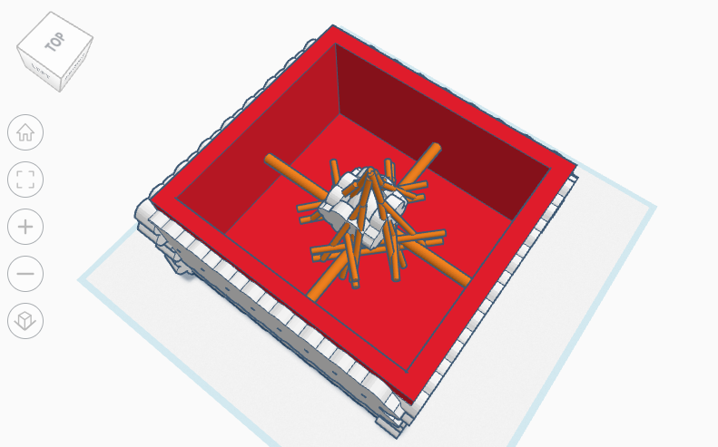

Jeseca's Website!
Into into Engineering

8/25/23 - This is my first journal entry. Today in class we did a challege using marbles and pipes and the challenge was to get the marble all the way to the bucket using only the pipes to getthe marble through. During this challenge, I learned that it takes many attempts to make soomething be sucessful. I also learned that workig as a team is very important in making a project.
9/11/23 - When staring this project, my group and I decied in a design for our Rube Goldburg Machine. After we decided on a design, we worked together to CAD our machine. Then, we started to draw out all the parts by measuring all the different peices of the machine on carboard and started to cut them out.
9/15/23- Today we fininished buliding our Rube Goldburg Machine and we tested it out today. During the proccess of building, our design was very effecient because on how organized we were during the process. For example, we measured and drew out al the different parts of our machine before we cut or put anything together.When we tried our machine after it was all done, it sucessuflly poped the balloon on our first try as we hoped it would and took a video and a picture of the final result!

9/29/23- Today is our last day learning about computer engineering. Computer engineering is a combination of electrical engineering and computer science. For our computer engineering project, we completely took apart a computer while learning about the different parts that go into a computer as well as how it functions.During this process, I learned that a computer´s functions are very complicated and many things go into a computer such as a motherboard, storage, audio, GPU, CPU, ect...

10/6/23- Today in class, we learned about bioengineering and made a prosthetic hand that can hold a water bottle. At first, our design was to make a hand with no fingers, however, it did not take long for us to realize that it was not working at all whatsoever. Then we designed another hand which could be more efficient so that we could lift the water bottle. We had some help from Cathrine who generously helped complete our second design. After we were done with our hand, we tried it out and it successfully worked.
10/20/23- Today in class, we tested out our rocket that we made for our aerospace engineering unit. Before we built this rocket, we used TinkerCAD to design our rocket. When we built this rocket, we used a 2 liter bottle, cardboard, paper, and hot glue. We designed our rocket to have parallelogram shaped wings and a cone at the top. When we tested our rocket, it went pretty high.
10/26/23- Today in class, we designed a water filter for our environmental engineering project. For this project, we could use bottles, cotton, sand, big and small rocks. My partner and I had an idea to place the cotton at the bottom of the bottle, then put the sand, small rocks, and finally big rocks. We did this so that the big particles of filthy water would get filtered first using the pebbles and slowly making the water clear. We put our water in the filter a few times and it made more and more progress.

11/3/23- Today in class, we learned many things about electrical engineering. For our assignment, we had to create a few circuits on TinkerCAD. On TinkerCAD, we had to make three light bulbs light up using resistors, a bread and a battery. We connected the positive parts of the battery to the positive parts of the breadboard and the negative part of the battery to the negative part of the breadboard.


11/13/23- Today in class, we did our project on Electrical Engineering. For this unit we used bread boards, LED lights, wires, and resistors to turn on a light in different ways. Some ways we turned on the light was using one resistor to turn on one light. Then, we tried turning on 3 lights using 3 resistors. After that, we had a challenge to turn on 3 lights using only one resistor. Lastly, the last lab (lab 4) we had to make the lights blink by coding them.
12/5/23- Today in class, we learned about business engineering and we did a project where we would have to create a product and create a presentation with many types of information. Some include the customers, negatives, positives, other company competitions, strengths and weaknesses of the product etc... For my group, we decided to make a product called "Shoe Warmies." Shoe Warmies are boots that have a built-in heater to keep your feet cold in very cold places so that your feet don't feel numb. We put that our main customers would be people living in very cold areas for people going on vacation where there is snow.

12/12/23- Today in class, we learned about civil engineering and we made a project. Our project for this unit was to design and build a 2 feet bridge using only 40 pieces of spaghetti and wood glue. The challenge was to see how much water each bridge would hold. During this project, we made a first version of an idea of what our bridge can look like and when we tested it out we noticed its flaws and we made a final bridge. When making our final iteration of our bridge, we took into consideration the things that went wrong with the other bridge and we fixed it. Overall, my group's bridge held a bit more than a full cup of water.

1/12/24- Today in class, we learned about Chemical Engineering. Our project for this unit was to make OObleck. Our Challenge was to add the right amount of water to the cornstarch. When we made our cornstarch, we did not add enough water and our OObleck turned out to be very hard and it was very hard to mix up and break apart.

1/26/24- Today in class, we started sketching and CADing a new project. We are making a mousetrap car in our goal is to make it go as far as we can using certain techniques. We first wrote out our proposal for our project which included project description, project research, design constraints, schedule of milestones and team member biographies. After we finished our proposal we started by drawing out our design and using measurements to ensure that we have the most stable design that will make the car move. After we were done drawing out our design, we used CAD to sketch it out based on our measurements and the supplies we had to use.
2/9/24- Today in class we finished making our first iteration of our MouseTrap car. When we originally calculated our distance, it was said that it should go about 26 feet. When we had tested it out, our mousetrap car only moved about 14 feet. Some ways that we think we can make a more efficient and better car is by making the car overall just more durable. In our first iteration, our back wheels were very fragile and kept breaking constantly when testing it out. Another way we can make the are more durable is by making sure that the wheels are perfectly aligned with the with the car. To add on, our rod should be more stable and should go forward and not sideways and hit the wheel. Also, the body of our car should be flat without any walls attached to it. Therefore ,there are many things we can change when making our second iteration.

2/26/24- After 5 weeks of working on this project, it is finally finished. Our second iteration of our mousetrap car is done and tested. When making our second car, my partner and I definitely applied many corrections based on the mistakes made in the first iteration. To start, we made our second design overall more durable including making the wheels better and making the car more aligned. Also, we made our car flat without any walls getting in the axle when going down. Overall, our car was pretty successful. Our car went 34 feet when the estimated amount was 34.45 ft. Our wheel to axle ratio was 35:1 and our rope length pulled was 13 inches. Some problems that we ran into when making our sencond iteration was when we tried raping the rope around the wheel, the rope would constantly get clumped up together. If we were to make a third iteration, we would make sure the wheel has enough space to completely unwind so that it would not get caught up.
3/1/24- Egg Drop Design: Today in class, we started our new project. Our project is to create a cage for an egg that will prevent the egg from cracking when dropped from three stories high. The materials that my partner and I used for our design are straw, a trash bag,cotton, cardboard,paper,and string. Our design was to build a cage using straws and putting it into a cardboard box that is filled with paper. On the outside of our box, we plan to put cotton all around and in the top of the box, we should have two strings connected to a trash bag as a parachute. The cotton is used to make a softer landing when the box falls.
 3/12/24- Egg Drop Result: Today in class, we tested out our design for our egg. We went up three stories high to drop our cage and see if it would prevent the egg from cracking. The egg drop was successful with our design. The cotton on the bottom of the box really made the landing of the box a lot softer. The paper inside the box allowed for extra protection for the egg in case it fell out of the cage. The cage however was very well built and the egg was protected on all sides. Also, I think that the parachute was very helpful as well since it slowed down the landing on the box. Overall, this project was very fun and interesting.
4/3/24-Today in class, we tested out our boat that we designed to float and travel on a gutter. When doing the first iteration of the boat, my partner and I decided to use parts of a cup and connect them with straws on the bottom. Then, we added a sail in front of our boat so that it travels nicely when we blow on it. When I tested out the boat, it rarely traveled because too much water came on top of the cup and sinked it. Considering this, for our second iteration, I made sure to not have any gaps between the two parts on the cup. I also made the sail a bit more stable as well as adding two straws at the side of the boat so that it can travel in a straight line. When testing out the second iteration, it worked a little bit better than the first but not by a lot. Mr. Kim says that 30 cm is terrible. But, I tried my best. Also, where is Brianna???